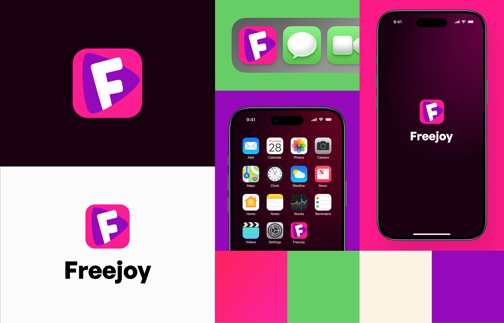
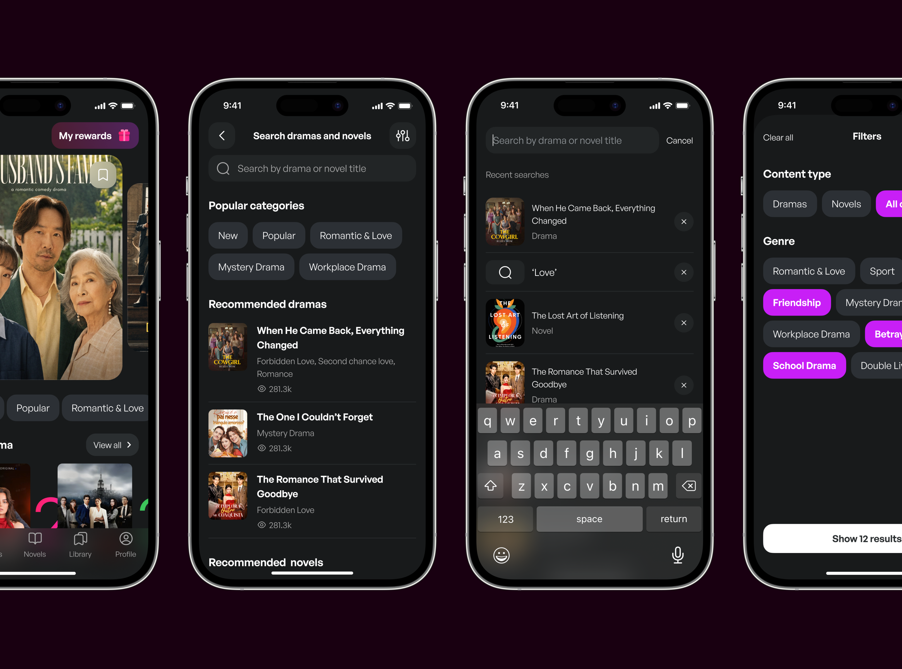
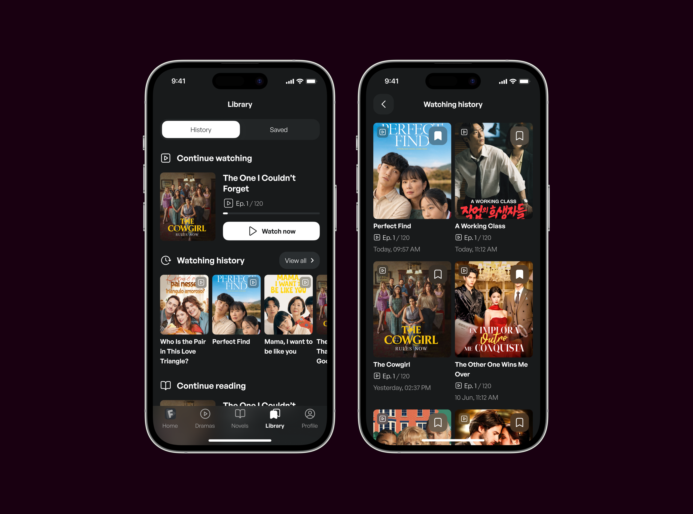
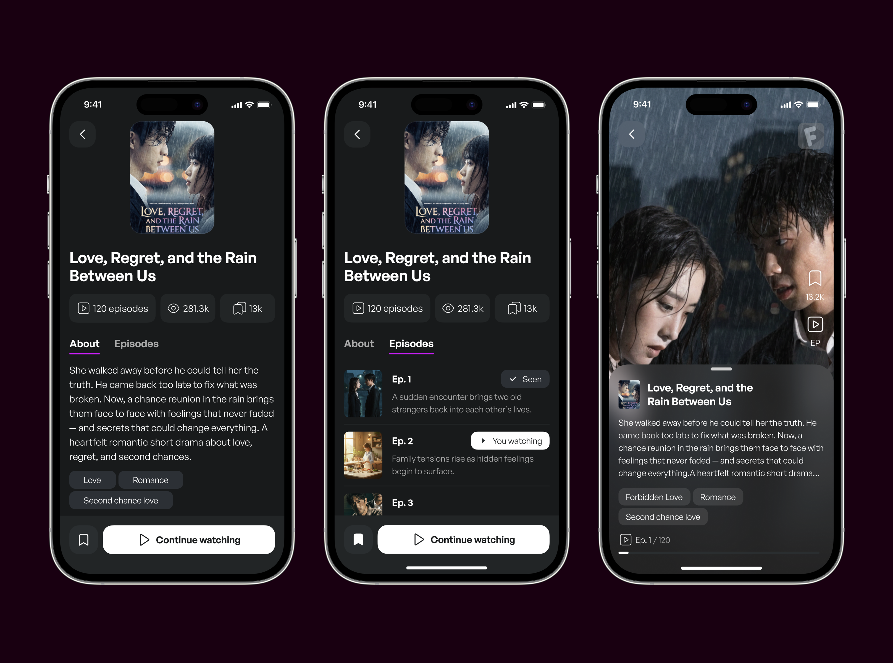
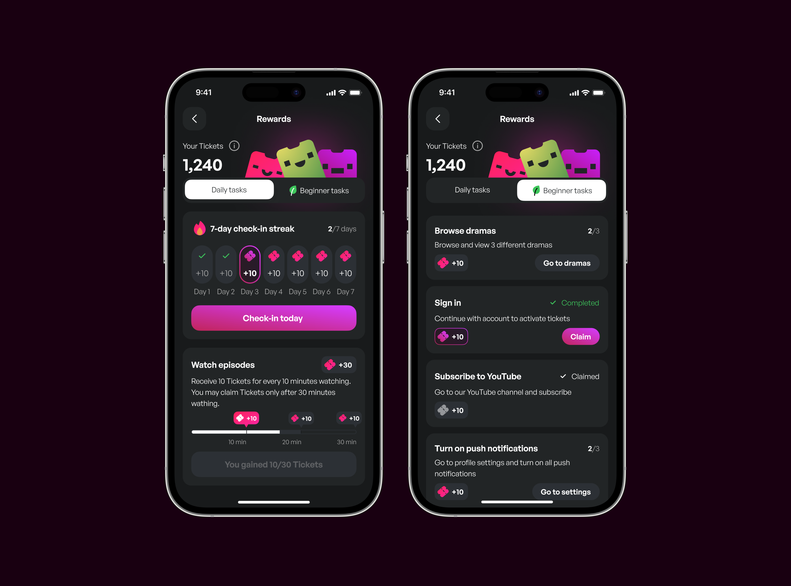
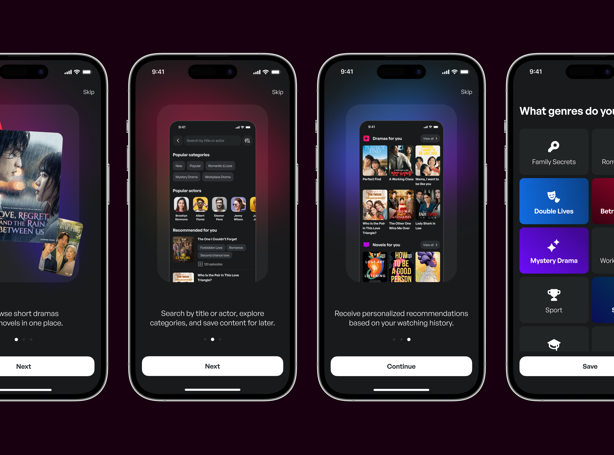
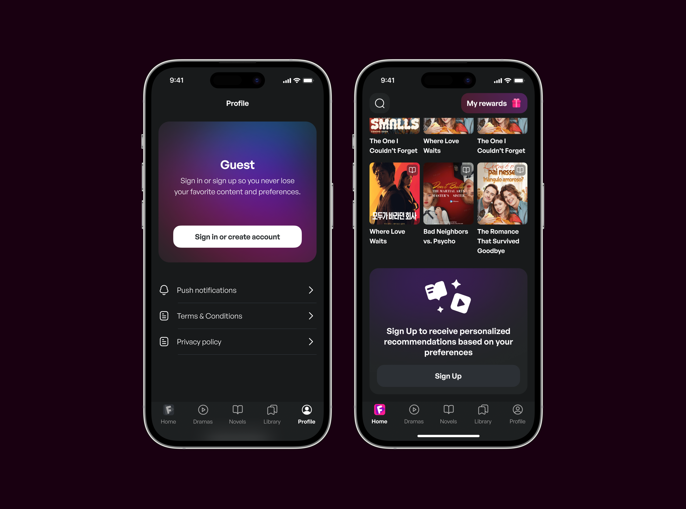

О проекте
Freejoy app — приложение для просмотра коротких сериалов и чтения новелл. Целевая аудитория — женщины 45+, преимущество — новеллы и сериалы в одном месте.
Цель: разработать MVP.
Задачи: провести исследование, насколько жизнеспособно приложение 2 в 1 для целевой аудитории, определить и разработать ключевые флоу в приложении, целясь в метрику Retention.
Роль: дизайнер, от концепта и брендинга до передачи в разработку.
Исследование
Целевая аудитория — женщины около 45–50 лет, любят смотреть дорамы, короткие видео, романтические истории, детективы. Смотрят сериалы в общественном транспорте по пути на работу или во время бытовых занятий. Есть потребность в простом приложении.
Гипотеза
Если мы объединим два в одном — сериалы и книги — ожидаем аудиторию из других продуктов, примерно 10 тыс. скачиваний за месяц и что 20% пользователей вернутся в приложение в течение недели.
Функционал
- Просмотр сериалов
- Поиск сериалов
- Сохранить сериал
- Чтение новелл
- Поиск новелл
- Фильтр результатов поиска
- Сохранить новеллы
- История просмотра
- Рекомендуемый контент
Концепт
Я сделала концепт, который отражает ожидания аудитории — тёмная тема для более комфортного просмотра, розово-фиолетовые оттенки, ассоциирующиеся с романтикой, крупный текст и кнопки.

Разработала логотип и фирменные цвета. FreeJoy — значит яркий, весёлый, свободный, выходящий за рамки. Я сделала знак Play, из которого выглядывает первая буква названия сервиса. Знак читается издалека, контрастен и удобен для использования в различных размерах и носителях.

Дизайн-система

Поиск
Мы предположили, что при поиске пользователям можно показать рекомендуемый контент, чтобы пользователь дольше оставался в приложении и мог найти то, что ему подойдёт. Фильтры по жанру помогут сузить выбор.

Библиотека
Добавила возможность сохранить понравившийся контент и видеть, что ты смотрел ранее, чтобы всегда можно было вернуться к контенту и было ощущение предсказуемости и надёжности сервиса.

Просмотр новелл
Перед включением сериала можно посмотреть, о чём он, посмотреть краткое содержание серий, а на экране просмотра вернуться к описанию, выбрать эпизод.

Награды и баллы
Мы добавили систему баллов, чтобы постепенно погрузить пользователя в геймификацию, добавили простые задания, за которые можно получать Билетики, и которые мотивируют оставаться в приложении дольше и возвращаться к нему.

Онбординг
При первом входе в приложение мы рассказываем пользователю о преимуществах приложения, предлагаем заполнить свои предпочтения. Можно пропустить этот этап и вернуться к нему в настройках.

Режим гостя
В приложение можно зайти, не регистрируясь. Всегда можно создать аккаунт, и баннеры сообщают об этом, например на главной, напоминая, что чтобы получать персональные рекомендации, можно зарегистрироваться.

Итог
Сделали и согласовали дизайн MVP за 2,5 месяца. После выхода в прод я бы замерила такие метрики: конверсия в регистрацию в приложении, DAU/MAU, частоту сессий, сompletion rate в дочитывание/досматривание новелл и сериалов.